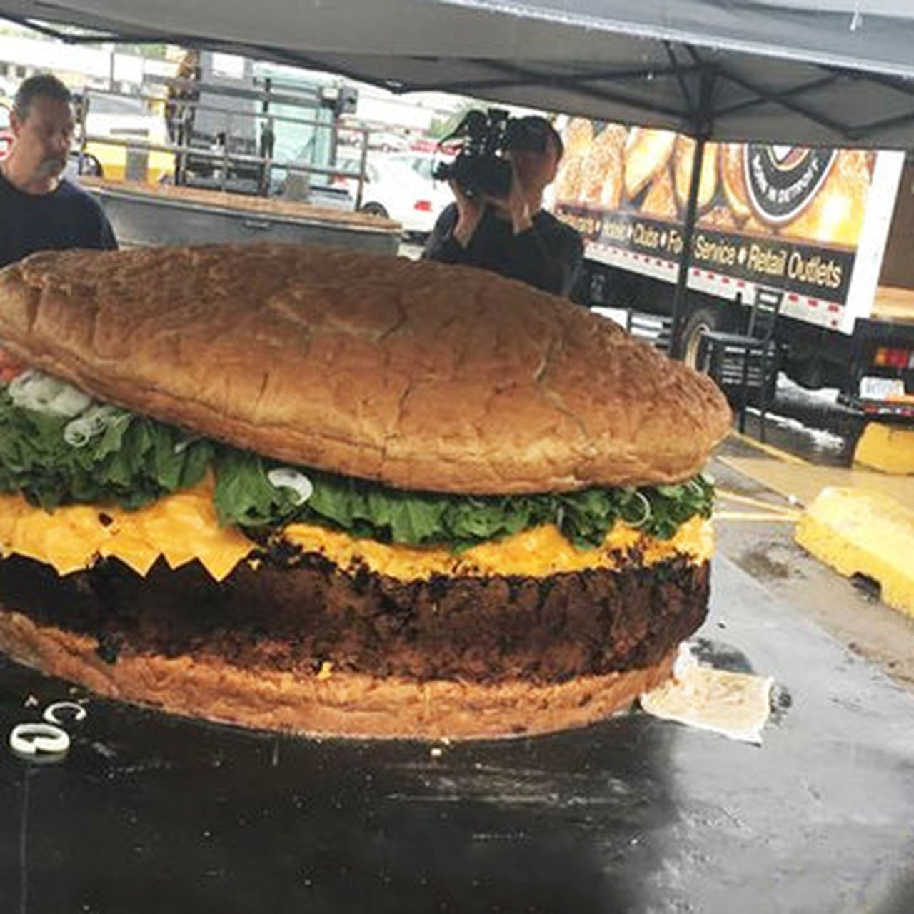

Hamburgers With Too Much Meat
Hamburgers are a classic American dish that can be enjoyed in many different ways. However, this recipe takes it to the next level by using an excessive amount of meat. The result is a juicy and flavorful burger that will satisfy even the biggest appetites. And boy do I mean BIG.

Ingredients
- 2 pounds of ground beef (or more if you dare)
- 1-4 hamburger buns (Inconsequential because the heft will be too much for mortal buns to bear, but let them try)
- 4 slices of cheese
- Lettuce, tomato, onion, mayo, mustard and any other toppings you desire. But no bacon, please. That would be too much meat. Wait a minute...
- Salt and pepper to taste plus any other seasonings. Seriously. People get too worried about what seasonings to use. Just use whatever. And if you put too much, just add more meat. It solves everything. I could drop a whole copy of Aquaman on 4K blu-ray into the patty and be like "Ehh that's gross, but I can just add some meat and eat around it."
Instructions
Prep time: 15 minutes
Cook time: 10 minutes
- Preheat your grill or stovetop pan to medium-high heat.
- Divide the ground beef into 4 equal portions and shape them into patties. Then mash them back together into 1 patty because this is all about too much meat.
- Season both sides of the patties with salt and pepper, or any other seasonings you prefer. We already discussed this, Derrick. Stop having a panic attack about the seasonings.
- Place the patties on the grill or pan and cook for about 4-5 minutes on each side, or until they reach your desired level of doneness.
- During the last minute of cooking, place a slice of cheese on each patty to melt.
- Toast the hamburger buns on the grill or in a toaster for added flavor and texture.
- Assemble the burgers by placing the cooked patties on the buns and adding your desired toppings.
- Serve immediately and enjoy your massive creation!
- Have your doctor ready on the phone because this is definitely too much meat. But how were we to know?